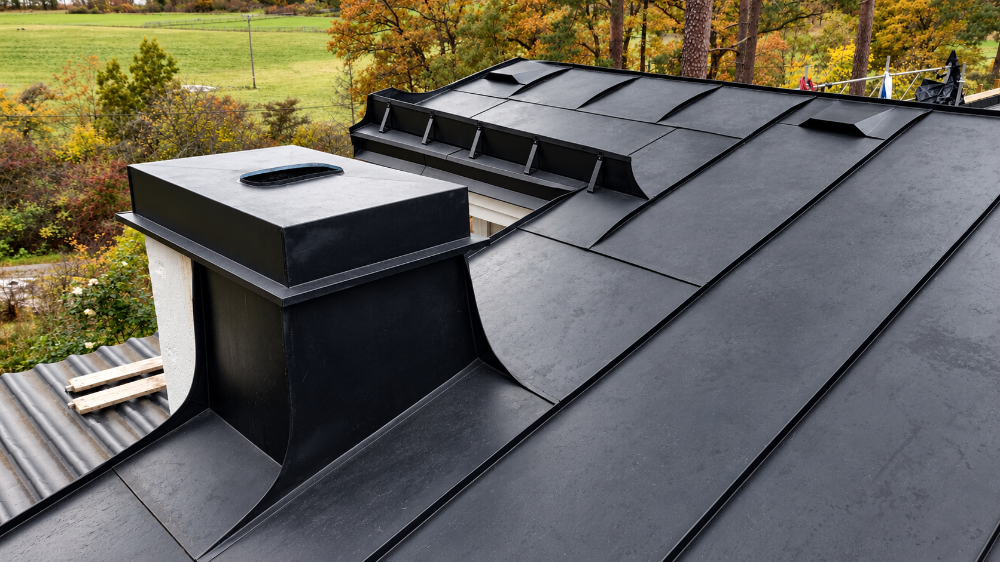
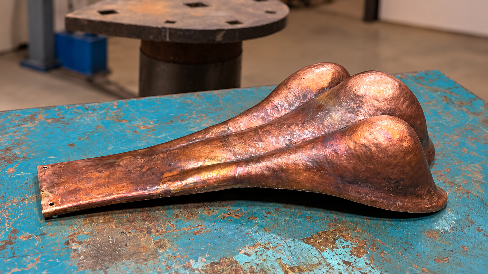
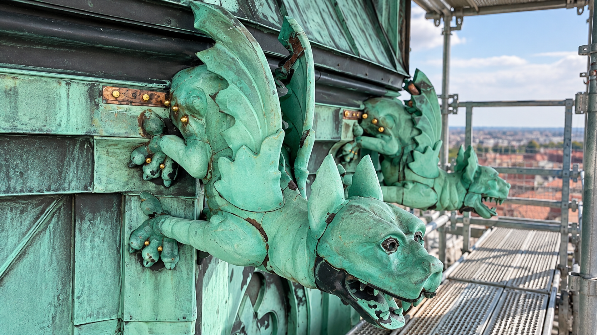
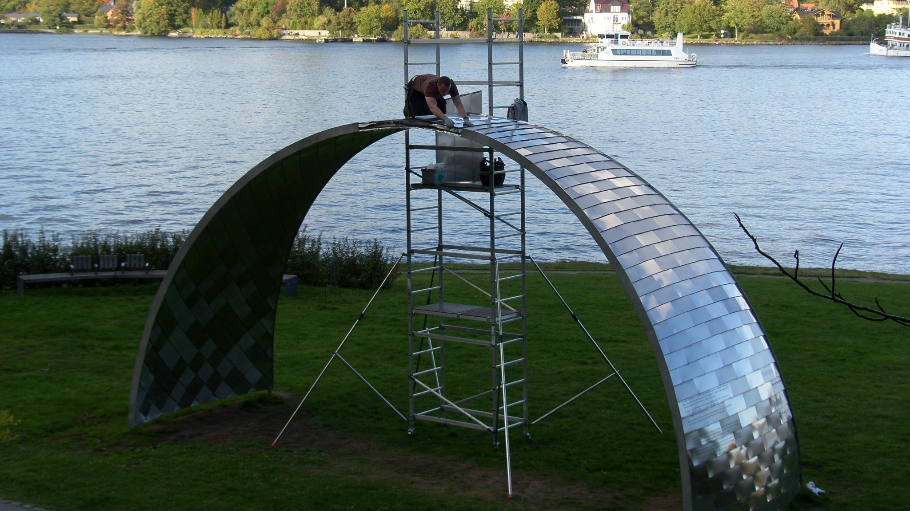

Kommande 2027.
J. Norberg Plåtslageri AB är ett nystartat aktiebolag som drivs av mig, John Norberg. Efter tio år i branschen har jag arbetat nästan uteslutande med restaurering och nyproduktion av plåtarbeten på kulturhistoriska byggnader runtom i Stockholm.
När du anlitar mig har du direkt kontakt med den som utför arbetet – från offert till faktura. Det innebär att kunskap, erfarenhet och känsla för hantverket följer med genom hela projektet, utan onödiga mellanhänder eller informationsvägar där missförstånd kan uppstå.
Varje projekt genomförs med resultatet som högsta prioritet. Genom stor noggrannhet, känsla för de små detaljerna och respekt för det traditionella hantverket utför jag varje arbete med yrkesstolthet och höga krav på kvalitet.


Byggnadsplåtslageri
Traditionellt byggnadsplåtslageri med fokus på noggrant utförande, hållbarhet och detaljer.

Kopparslageri
Tillverkning och bearbetning av koppar för tak, fasader och arkitektoniska detaljer.

Restaurering
Restaurering av äldre och kulturhistoriska byggnader med respekt för originalets uttryck.

Specialprojekt
Specialanpassade arbeten där traditionellt hantverk möter unika arkitektoniska lösningar.
Aktuellt
Just nu arbetar jag med restaureringen av koppardetaljerna på Villa Bergabo på Södra Djurgården. Arbetet omfattar demontering av den befintliga kopparen, renovering och anpassning av underlaget samt återmontering av detaljerna.
Läs mer om Villa Bergabo →Har du ett projekt inom plåt, koppar eller restaurering? Kontakta mig gärna för att diskutera arbetet.